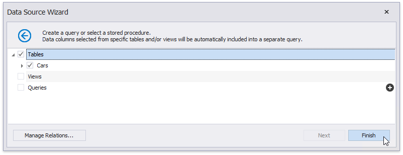

Bind a Report to an XML File
This tutorial demonstrates how to bind a report to data stored in an external XML file.
Click the report's smart tag. In the invoked actions list, expand the drop-down menu for the Data Source property and click Add New DataSource.

On the first page of the invoked Data Source Wizard, select Database and click Next.

The next page allows you to specify whether you want to use an existing data connection or create a new data connection. Select the first option and click Next.

On the next page, specify the data provider (XML file) and the path to the database file.

To proceed to the next wizard page, click Next.
On the next page, you can choose which tables, views and/or stored procedures to add to the report. You can also construct custom queries using the Query Builder. Click Finish to exit the wizard.

Note
Some of the data shaping capabilities available to SQL data sources (such as sorting, grouping and filtering data, as well as using aggregate functions) are not supported for XML files.
The newly created SQL data source will be displayed in the Components node of the Report Explorer. Additionally, the hierarchy of the data source will be reflected by the Field List.